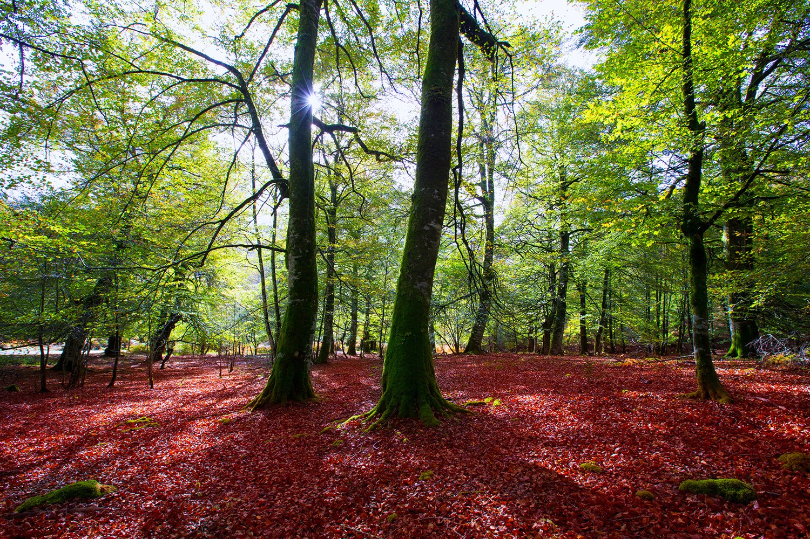
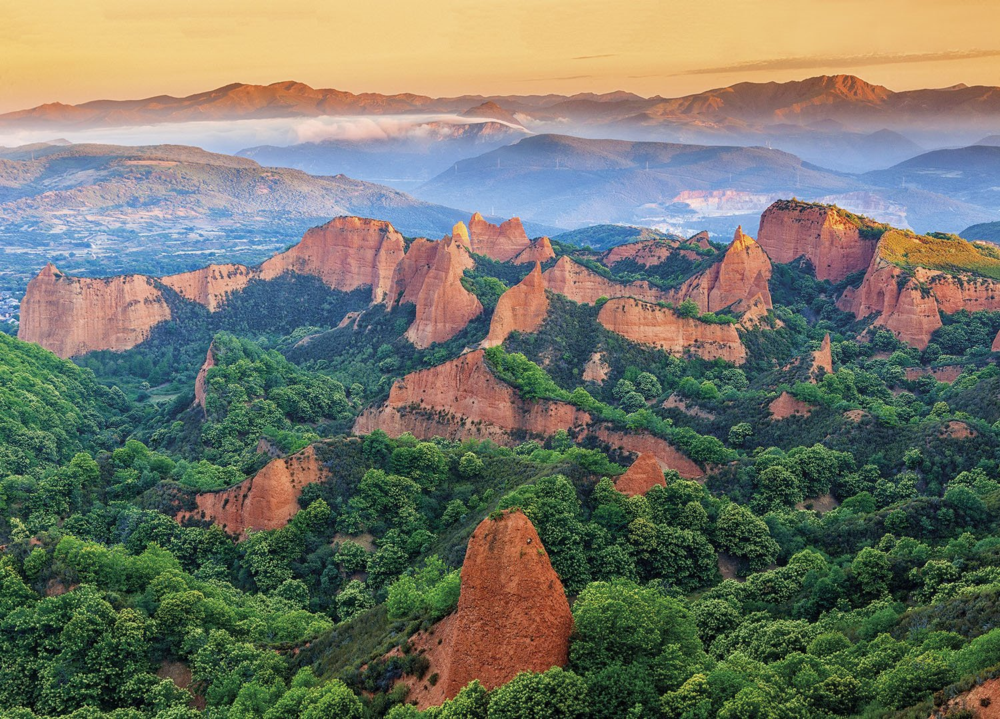
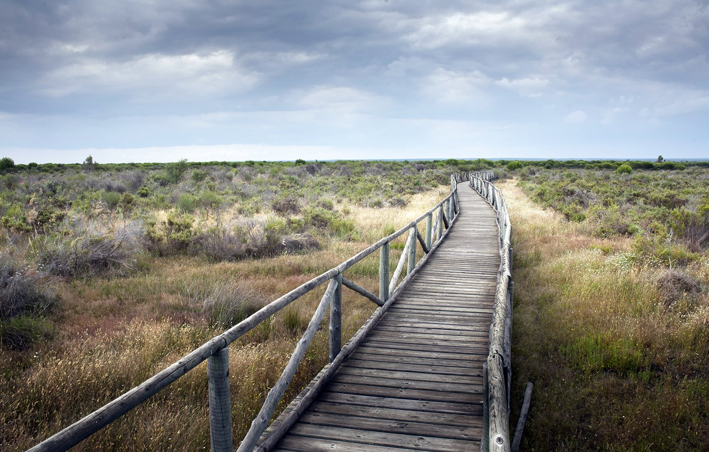
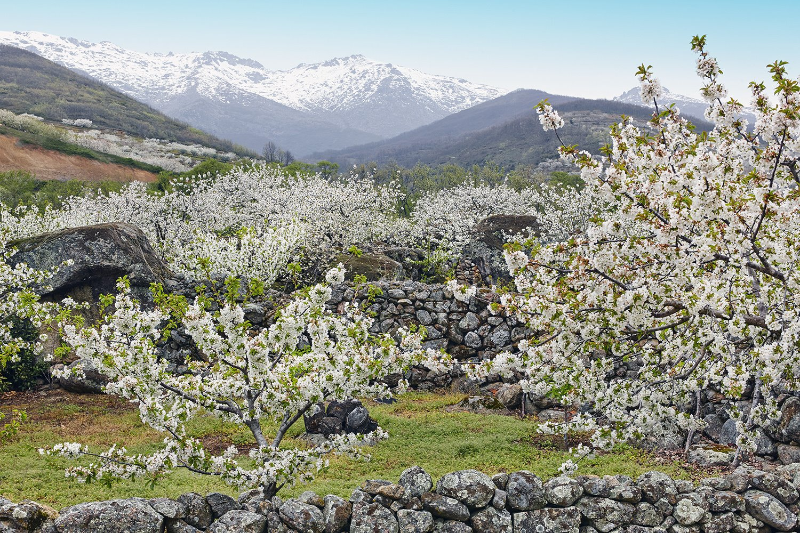
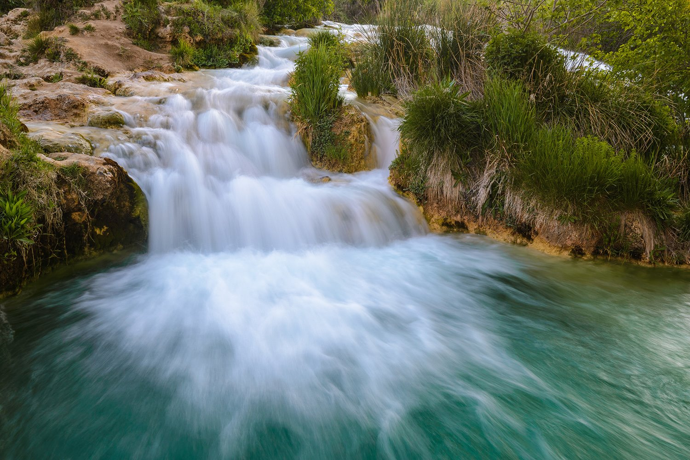

|
Tenemos multitud de destinos interesantes e increíble para elegir, pero aquí además os vamos a dejar una selección de lujo. ¿Te imaginas encontrar el viaje que tanto deseas por la mitad de lo que pensabas gastar?
Pues no se hable más, mira nuestras siguientes OferTravels y elige qué lugar prefieres para viajar por un precio incomparable. ¡Adelante, toca decidir!
SELVA DE IRATI (NAVARRA): LA SELVA MÁGICA

Irati es una tupida masa verde entre brumas que casi no deja pasar la luz del sol, un prodigioso ecosistema que cubre 20.000 hectáreas de los valles y montes del norte de Navarra hasta llegar a Cize y Soule, ya en el sur de Francia. La arrebatadora belleza de esta foresta, compuesta de hayas y abetos en su mayor parte, muestra todas las gamas del verde, hasta que llega el espectáculo de la otoñada, en este caso, algo así como una primavera teñida de marrones increíbles. El alto índice de precipitaciones anuales da origen a una abundante vida animal y vegetal difícil de igualar en otros lugares.
LAS MÉDULAS (EL BIERZO): UNA DE ROMANOS

Declarado Patrimonio de la Humanidad en 1997, estas colinas rojizas que se entremezclan con la vegetación son una de las maravillas naturales de El Bierzo, en León. Durante el Imperio romano, las Médulas fueron una importante mina de oro, por lo que en el terreno se facilitaron accesos para su extracción y se montó una compleja obra de ingeniería para la canalización del agua. Esta acción, que se desarrolló durante más de cien años, tuvo un importante impacto sobre el entorno, que hizo que la tierra y el agua modelasen el paisaje. La visita cuenta con un aula arqueológica donde se explica la historia del lugar, también hay varias rutas que recorre la zona y se puede acceder al mirador de la Orellán, desde donde se obtienen las mejores vistas del lugar.
DOÑANA (HUELVA): UNA BIODIVERSIDAD ÚNICA

El parque cumple medio siglo de esplendor natural. El visitante se enfrenta a una extensa riqueza de ecosistemas que diríase un continente en sí mismas: una geografía de humedales que son paso y lugar de cría de miles de aves, playas salvajes, dunas entre pinares, densos bosques de ribera, flamencos, un río, aldeas pintorescas. Parece difícil de abordar, pero nadie dijo que no se pueda visitar tantas veces como se desee, ya sea viniendo desde Sevilla, Cádiz o Huelva.
VALLE DEL JERTE (EXTREMADURA): SÍMBOLO DE PRIMAVERA

Llamado así por el río del Jerte, este valle situado al norte de Extremadura es conocido por los campos cubiertos de cerezos en flor con la llegada de la primavera. Los mejores meses para visitarlo son marzo y principios de abril, cuando la floración está en su máximo esplendor, el Jerte se ve arropado por un gran manto blanco y da comienzo la Fiesta del Cerezo en flor. Otros atractivos del lugar es la Garganta de los infiernos, una reserva natural con zonas de baño; o el cercano monasterio de Yuste, Patrimonio Nacional, ubicado ya en la comarca de La Vera.
LAS LAGUNAS DE RUIDERA (ALBACETE):UN OASIS EN CASCADA

Este espectáculo natural se encuentra situado en el campo de Montiel, entre las provincias de Albacete y Ciudad Real. Junto con el Parque Nacional de Plitvice, en Croacia, está considerado como una de las mejores representaciones de lagos creados por la acumulación de carbonato cálcico. Esto permite la formación de presas naturales con imponentes cascadas que caen de una laguna a otra. Entre su rica fauna destacan las aves acuáticas como el carricero tordal, la gallineta o el aguilucho lagunero.
|